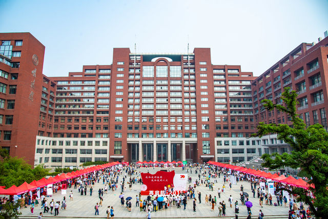

Education
University of Michigan, Ann Arbor, M.S. Statistics, 2018.8-2020.5
- GPA: 4.0/4.0
- Courses: Deep Learning for Computer Vision, Machine Learning, NLP Algorithm, Bayesian Modeling, Statistical Computing, Web design, Multivariate Analysis, Regression Methods, Nonparametric Statistics, Probability Theory, Statistical Inference, Statistical Consulting.

Renmin University of China, Beijing, B.S. Operation Research, 2014.9-2018.7
- GPA: 3.74/4.0
- Courses: Numerical Optimization, Data Structure and Algorithm, Data Mining, Database Theory and Application, System Design, Object-Oriented Programming, Time Series Method, Python Programming, R Programming, Higher Algebra, Mathematical Analysis.
